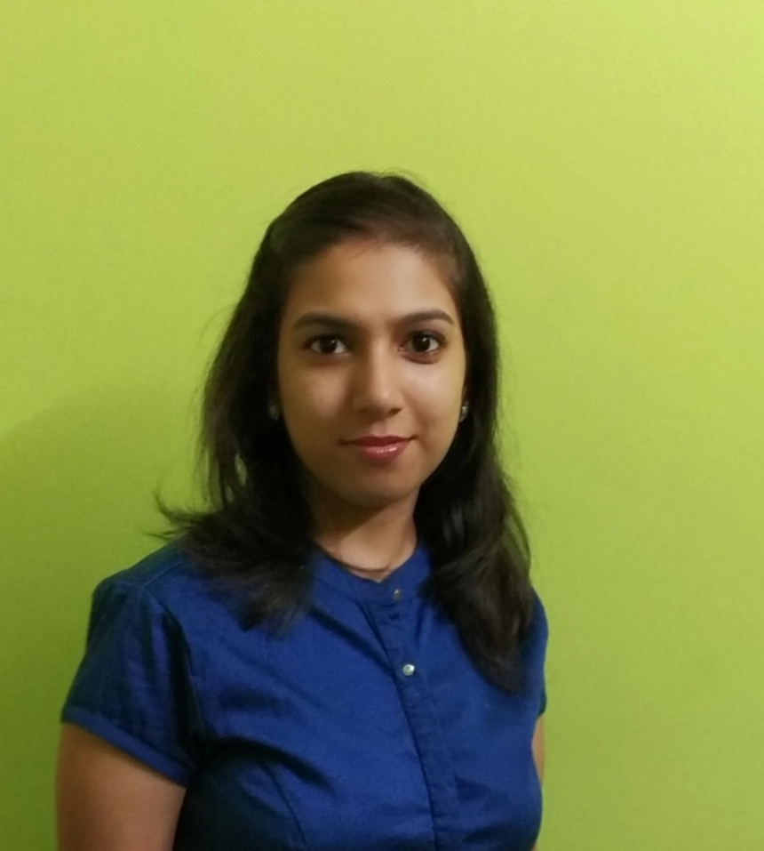

Scrum facilitation
Focused ceremonies that create clarity, ownership, and momentum.
Project Manager · Certified Scrum Master
Ayesha C.
9 years of turning complex delivery into clear priorities, aligned teams, and measurable outcomes across Schneider Electric, TCS, and MRM.

01 / Profile
I bring structure to moving parts and help people do their best work together.
I work at the intersection of people, process, and progress — facilitating better conversations, making delivery visible, and helping teams build the confidence to own their outcomes.
02 / Expertise
Practical Agile leadership with the right amount of governance for the context.
Focused ceremonies that create clarity, ownership, and momentum.
Structured prioritisation, sprint planning, and work ready to move.
Scope, milestones, dependencies, RAID tracking, and delivery plans that teams can act on.
Communication rhythms that keep decisions moving at the right level.
Early visibility of blockers, dependencies, compliance, and change.
Pragmatic workflows, KPI tracking, reporting, and PMBOK-informed delivery discipline.
03 / Proof of impact
Selected evidence from delivery and governance work.
Reduced a 100+ item backlog to 40–50 items through prioritisation, alignment, and process cleanup.
Supported JWT implementation governance across multiple HR systems to improve security, compliance, and delivery timelines.
Designed tailored JIRA/Kanban boards and Scrum processes for Ping, HR-Doc, T&A, and IAM.
Certified Scrum Master and SAFe 6 Scrum Master, with Fundamentals in Product Management and multiple Step-Up and New Bee Star awards for governance and stakeholder collaboration.
04 / Portfolio samples
Concepts and delivery-focused work samples demonstrating product thinking, team visibility, and Agile ways of working.
An illustrative decision-support simulation that compares opportunities using RICE, WSJF, value-versus-effort, and risk-readiness gates. It maps how Jira Product Discovery, Miro, Excel/Sheets, Jira Software, and Power BI can support a transparent path from opportunity intake to delivery planning. View live demo ↗
↗A portfolio-ready workspace combining sprint visibility, RAID management, release planning, and executive reporting. Sample project: an illustrative delivery-control view designed to make team flow, decisions, and stakeholder updates clearer and more actionable. View live demo ↗
↗05 / Recognition
Credentials that support delivery expertise, plus recognition for collaboration, governance, and client service.
06 / Community impact
A commitment to contributing beyond the workplace through humanitarian, volunteering, and employee well-being initiatives.
Humanitarian & volunteering
Volunteered with RoundGlass Foundation as an education volunteer, supported fundraising initiatives with HelpAge India, and participated in a blood donation camp conducted at Schneider Electric by the Indian Red Cross Society.
Employee well-being
Selected and trained at Schneider Electric as an Emotional Care Champion — part of a select cohort of employees available to colleagues seeking support through the organisation's mental-health initiative.
Suicide prevention training
Completed training in suicide risk recognition and gatekeeper intervention through QPR, supporting early recognition, compassionate response, and connection to appropriate help.
07 / Contact
Open to conversations about project management, Scrum Mastery, Agile transformation, and teams that want to deliver better.